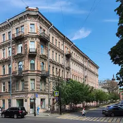
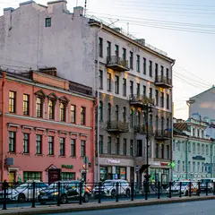
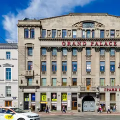
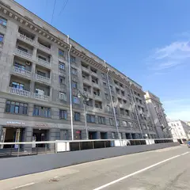
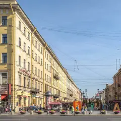

Места по типу · данные на 26 ноября
Кофейни и пекарни Петербурга
47 кофеен и пекарен: завтраки, кофе с собой для прогулки и места, где спокойно поговорить, — например, «Дом Флоу», «ЧАО Какао» и «Пенка». 42 места — недорогие, примерно до 1 500 ₽ на человека. Хороший старт для первого свидания или утра выходного дня.
- 47 мест
- 49 планов
- 5 районов
Кофейни и пекарни 40 из 47
Садовая ул., 21А
Новое
Кофейня на всех пяти этажах модернового дома 1903–1904 годов: лестница модерн, исторические окна, зелень на первом этаже и мини-оранжерея на втором.
Подробнее и маршрут: Дом ФлоуПозвать сюда: Дом Флоу
Фото здания: Артём Светлов, CC BY-SA 4.0 · Wikimedia Commons
Миллионная ул., 25
Какаочная в двух шагах от Эрмитажа: густой горячий шоколад и авторское какао из окошка — согреться посреди прогулки.
Подробнее и маршрут: ЧАО КакаоПозвать сюда: ЧАО Какао
Фото здания: Александр Сигачёв, CC BY-SA 4.0 · Wikimedia Commons

ул. Восстания, 31
Уютная кофейня у Чернышевской с вишнёвым пирогом и вечерними кинопоказами — спокойный вариант для неспешного свидания.
Подробнее и маршрут: ПенкаПозвать сюда: Пенка
Фото здания: Bestalex, CC BY-SA 4.0 · Wikimedia Commons
Инженерная ул., 2-4
Кафе в колонном зале корпуса Бенуа Русского музея: завтраки, красивые десерты и русская кухня в исторических стенах.
Подробнее и маршрут: Кафе БенуаПозвать сюда: Кафе Бенуа
Фото: Никонико962, CC BY-SA 4.0 · Wikimedia Commons
Барочная ул., 4А
Кафе у бывшего Левашовского хлебозавода: своя пекарня и лавка, завтраки до обеда, свежий хлеб и живая городская атмосфера.
Подробнее и маршрут: Кафе на ХлебозаводеПозвать сюда: Кафе на Хлебозаводе
Фото: Никонико962, CC BY-SA 4.0 · Wikimedia Commons

Лиговский пр., 33-35
Новое
Кофейня, где к Хэллоуину делают сладкий десертный кофе в съедобном стаканчике; забавно зайти вдвоём или с подругами.
Подробнее и маршрут: КиссКиссПозвать сюда: КиссКисс
Фото здания: Никонико962, CC BY-SA 4.0 · Wikimedia Commons

Невский пр., 44
Спешелти-кофейня прямо на Невском: большое меню, каппинги и мастер-классы для тех, кто хочет научиться различать вкусы кофе.
Подробнее и маршрут: Сейф CoffeeПозвать сюда: Сейф Coffee
Фото здания: Никонико962, CC BY-SA 4.0 · Wikimedia Commons

ул. Декабристов, 29
Кофе здесь подают с подачей коктейль-бара: стойка в центре, часто меняющиеся сезонные спешалы и неожиданные акции. Коломна.
Подробнее и маршрут: Кофейня барного типаПозвать сюда: Кофейня барного типа
Фото здания: Анастасия Юрьевна Львова, CC BY-SA 4.0 · Wikimedia Commons
Гороховая ул., 49
Новое
Тёмная кофейня-инсталляция художника-каллиграфа со старинной мебелью и росписью; спешалти и напитки с русскими травами. Интересно зайти вдвоём или с подругой.
ул. Правды, 4
Новое
Кафе с мистическим антуражем: к кофе или коктейлю можно заказать расклад таро, гадание по руке или на кофейной гуще. Готовая тема для разговора.
Малый пр. П. С., 71
Новое
Кофейня на Петроградской с сезонными напитками вроде матчи с тыквой и пряного бамбла с карамелью. Зайти погреться во время прогулки.
Газовая ул., 10Д
Новое
Кофейня с сезонными напитками: фильтры с фруктовыми нотами, латте с бергамотом, медовая матча и необычные чаи. Уютно посидеть вдвоём.
ул. Чайковского, 56
Новое
Светлая минималистичная кофейня в «амстердамском» духе с завтраками весь день; тихий квартал у Таврического сада — удобно начать отсюда прогулку.
Караванная ул., 5
Новое
Спокойный зал в духе скандинавского модернизма: винтажная европейская мебель и лампы, полки с книгами об архитектуре, лавка с посудой и хлебом. Светлее всего днём.
Гагаринская ул., 34
Новое
Кофейня с сезонным меню: необычный фильтр, тыквенный суп, каша с тыквой и оладьи с брусникой.
Малый пр. В.О., 48
Пекарня на Васильевском, где главная звезда — сдобная плетёная бабка; к ней кофе и другая выпечка. Оценка 5.0 при сотнях отзывов.
Кадетская линия, 7/2
Кофейня на Васильевском, где любят эксперименты с фильтром и сезонные напитки; удобная остановка во время прогулки по Ваське.
Коломяжский пр., 22
Новое
Новая гастропекарня со слоистой выпечкой, своей обжаркой спешелти и полноценной кухней, в интерьере с каменными арками. Подойдёт для неспешного завтрака вдвоём.
Большая Конюшенная ул., 9 (3-й этаж)
Новое
Кафе в особняке Слепцова в духе парижской квартиры: лепнина, высокие окна и мраморная парадная по пути наверх. Завтраки и десерты; на выходных лучше бронировать.
Кожевенная линия, 40Е
Кофейня в Севкабель Порту: берёте латте и выходите к заливу встречать закат на набережной.
Малый пр. П.С., 79-81-83
Небольшая свежая кофейня на Петроградке с фраппе и сладкими авторскими напитками и почти идеальными оценками гостей.
Малая Морская ул., 7
Петербургская пекарня со своим производством: круассаны, эклеры и завтраки в двух шагах от Дворцовой площади и Невского.
Кронверкский пр., 45
Небольшая спешелти-кофейня у Горьковской со своими десертами; регулярно приглашает на гостевые смены бариста из других кофеен.
Невский пр., 69
Крошечная кофейня с входом в арке на Невском: быстрая остановка за фильтром между Маяковской и Фонтанкой.
ул. Декабристов, 39
Кофейня в Коломне с более чем тысячей высших оценок: продуманная сезонная карта напитков и десерты своего приготовления.
10-я линия В.О., 41
Кофейня-кондитерская, посвящённая вафельным трубочкам: начинки меняются по сезону, а к витрине выстраивается очередь.
Каменноостровский пр., 18/11Б
Кофейня во дворе у Каменноостровского с тысячами пятёрок: знаменитый вишнёвый пирог и тихая посадка вдали от проспекта.
пр. Добролюбова, 5/1
Яркая кофейня в эстетике 60–70-х, названная в честь альбома Pink Floyd: сырники по утрам, недорогое меню и уютная посадка.
Подробнее и маршрут: Atom Heart CoffeeПозвать сюда: Atom Heart Coffee
наб. реки Мойки, 102
Завтраки весь день с яйцами во всех видах и хорошим кофе на Мойке, недалеко от Новой Голландии.
Моховая ул., 31
Новое кафе на Моховой с собственной выпечкой: булочка дня, десерты и честные цены рядом с Литейным.
пр. Римского-Корсакова, 3
Одна из ключевых спешелти-команд города: точный эспрессо, сменные лоты на фильтре и бариста, которые с радостью расскажут про зерно.
Подробнее и маршрут: Mad Espresso TeamПозвать сюда: Mad Espresso Team
Лодейнопольская ул., 7
Кофейня на тихой улице Петроградки: авторские сезонные спешалы, французские тосты и десерты, за которыми едут специально.
ул. Академика Крылова, 4А
Розовый домик у Чёрной речки: латте с выпечкой, а по вечерам бесплатные кинопоказы при заказе — почти готовый сценарий свидания.
Свечной пер., 5
Кофейня-галерея у Владимирской: выставки, встречи и хороший кофе в одном небольшом светлом пространстве.
Социалистическая ул., 21
Кофейня на Социалистической с мокко и авторскими напитками; часто придумывает акции и мерч, поэтому сюда хочется возвращаться.
Малый пр. П.С., 60
Камерная кофейня на Петроградке, которую местные любят уже много лет: дружелюбная стойка, домашняя выпечка и ощущение своего места.
Подробнее и маршрут: Будем знакомыПозвать сюда: Будем знакомы
Большой пр. П.С., 13/4
Дневное кафе на Петроградке: пончики, сытные бейглы и десертные латте — хороший завтрак перед прогулкой. Работает до вечера.
ул. Гастелло, 7
Кофейня с книжными полками в Московском районе: дегустации зерна от разных обжарщиков и тихая обстановка для долгого разговора.
Лермонтовский пр., 50
Крошечная кофейня с говорящим названием: смелые спешалы на фильтре и выпечка вроде карпатки, которую разбирают к обеду.
Измайловский бул., 1к2
Пекарня-кофейня с красивой выпечкой и хлебом на Измайловском бульваре — спокойный завтрак с идеальными оценками на картах.


Готовые планы с этими местами 12 из 49
- Музей петербургского авангарда (Дом Матюшина) · Дом-музей · м. Петроградская
- 9 минут пешкомМечта · Кофейня
Сначала маленький деревянный дом-музей, потом семь минут пешком до кофейни с осенними напитками. Камерно и без спешки.
Открыть план: Авангард и сезонный кофеПозвать сюда: Авангард и сезонный кофе
Фото: MaryannaNesina, CC BY 3.0 · Wikimedia Commons
- Museum Route 66 · Музей · м. Невский проспект
- 3 минуты пешкомСпас на Крови · Музей
- 9 минут пешкомЧАО Какао · Какаочная
Фотографируетесь в декорациях старого кино, проходите мимо Спаса на Крови и греетесь какао в пяти минутах. Лёгкий план, где есть чем заняться и о чём говорить.
Открыть план: Америка 60-х и какаоПозвать сюда: Америка 60-х и какао
Фото: Рустам Абдрахимов, CC BY 3.0 · Wikimedia Commons
- Дом с башнями · Доходный дом-«замок» · м. Петроградская
- 6 минут пешкомНабережная реки Карповки · Набережная
- 5 минут пешкомМечта · Кофейня
От дома-замка на площади спускаетесь к Карповке и идёте вдоль воды, а греться заходите в кофейню — она в пяти минутах от набережной.
Открыть план: Башни, Карповка и матчаПозвать сюда: Башни, Карповка и матча
Фото: Grigorius m, CC BY-SA 4.0 · Wikimedia Commons
- Путь · Галерея · м. Сенная площадь
- 7 минут пешкомДом Флоу · Кофейня в особняке модерн
Днём проходите личные задания в галерее, затем пять минут пешком до кофейни в особняке модерн: спокойное место, чтобы обсудить, кому что откликнулось.
Открыть план: Выставка о себе и кофе в особнякеПозвать сюда: Выставка о себе и кофе в особняке
Фото здания: Артём Светлов, CC BY-SA 4.0 · Wikimedia Commons

- Галерея Кустановича · Галерея · м. Невский проспект
- 5 минут пешкомМалая Конюшенная улица · Пешеходная улица
- 6 минут пешкомLôuna · Кафе в особняке
Тихая бесплатная выставка, затем пара минут по пешеходной Малой Конюшенной и чай в кафе в особняке прямо рядом с галереей.
Открыть план: Галерея и прогулка у СпасаПозвать сюда: Галерея и прогулка у Спаса
Фото: Florstein, CC BY-SA 4.0 · Wikimedia Commons
- Музей Довлатова · Музей · м. Достоевская
- 7 минут пешкомМандрагора · Кафе
Камерный музей в коммуналке писателя и пять минут пешком до кафе, где к коктейлю гадают по руке и на кофейной гуще — будет что сравнить.
Открыть план: Довлатов, а потом тароПозвать сюда: Довлатов, а потом таро
Фото: Kommunalka1912, CC BY-SA 4.0 · Wikimedia Commons
- Дом с башнями · Доходный дом-«замок» · м. Петроградская
- 4 минуты пешкомSecret Garden · Оранжерея
- 4 минуты пешкомNerede · Кофейня
Дом с башнями на площади Льва Толстого, рядом зимний сад с фонтаном, затем кофе в Nerede — всё в паре минут ходьбы.
Открыть план: Замок, пальмы и кофеПозвать сюда: Замок, пальмы и кофе
Фото: Grigorius m, CC BY-SA 4.0 · Wikimedia Commons
- Думская башня · Смотровая площадка · м. Невский проспект
- 4 минуты пешкомДом книги · Книжный магазин
- 7 минут пешкомСейф Coffee · Кофейня
Двести ступеней ради панорамы, потом три минуты до Дома книги за открытками и кофе по соседству. Всё в одном квартале у Невского.
Открыть план: Крыши, книги и кофеПозвать сюда: Крыши, книги и кофе
Фото: Florstein, CC BY-SA 4.0 · Wikimedia Commons
- Музей флорариумов · Музей · м. Маяковская
- 4 минуты пешкомПодписные издания · Книжный магазин
- 8 минут пешкомКофейное · Кофейня
Разглядываете тропические мини-сады под стеклом, за пять минут доходите до большого книжного, а потом греетесь кофе по соседству.
Открыть план: Мини-сады и книги на ЛитейномПозвать сюда: Мини-сады и книги на Литейном
Фото: Екатерина Борисова, CC BY-SA 4.0 · Wikimedia Commons
- Музей Штиглица · Музей · м. Чернышевская
- 3 минуты пешкомCasimir · Кофейня
Роскошные залы музея Штиглица, а через две минуты — уютная кофейня с осенним меню, чтобы согреться супом или оладьями.
Открыть план: Музей Штиглица и тыквенный супПозвать сюда: Музей Штиглица и тыквенный суп
Фото: Lion10~commonswiki, CC BY-SA 4.0 · Wikimedia Commons
- Оранжерея Таврического сада · Оранжерея · м. Чернышевская
- 5 минут пешкомAm Saint · Кофейня
Фотографируетесь среди лиан и кактусов, а потом семь минут идёте до кофейни. Короткий план, когда хочется зелени посреди серого сезона.
Открыть план: Оранжерея и кофеПозвать сюда: Оранжерея и кофе
Фото: Екатерина Борисова, CC BY-SA 4.0 · Wikimedia Commons
- Парадная с ротондой (дом Яковлева) · Парадная с ротондой · м. Сенная площадь
- 9 минут пешкомДом Флоу · Кофейня в особняке модерн
Круглая лестница с колоннами до купола, потом кофе на пяти этажах особняка с оранжереей на Садовой.
Открыть план: Ротонда на Гороховой и кофе в доме модернПозвать сюда: Ротонда на Гороховой и кофе в доме модерн
Фото: Artyom Svetlov, CC BY-SA 4.0 · Wikimedia Commons


Как позвать
- Выбери план, место или событие — в карточке адрес, цены и маршрут в Яндекс Картах.
- Нажми «Позвать сюда» — соберётся приглашение-игра для свидания или голосование для компании.
- Отправь ссылку в любой мессенджер: тебе ответят, а компания отметит, куда и когда может. Бесплатно и без регистрации.